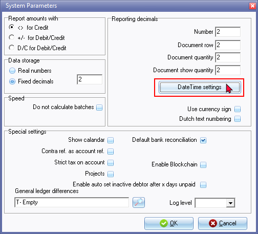
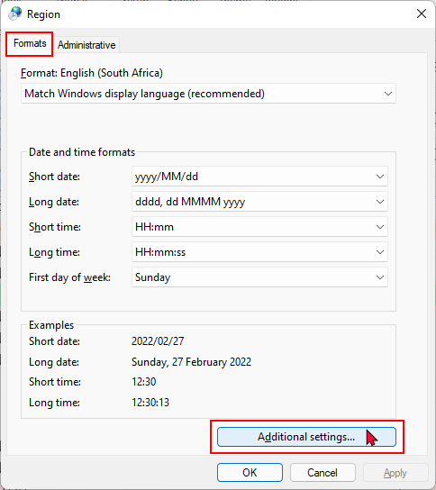
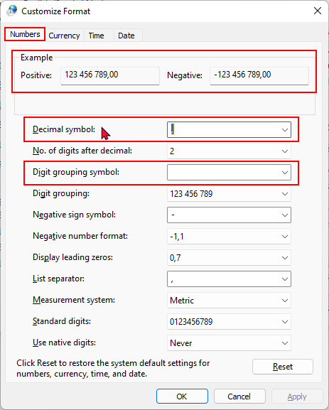
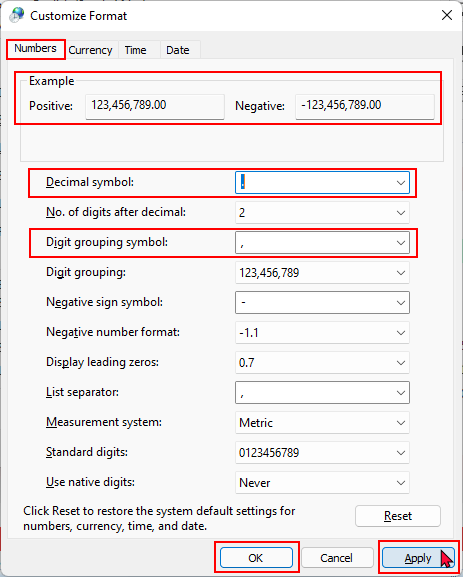

Settings for reports - Number format
If the "Digit separator symbol" setting e.g. 1 000.00 is not displayed on reports and screens, you need to change the “Customize Format – Numbers” format.
|
|
This is a global setting for all Sets of Books on your operating system. |

You may need to set the number format of your operating system to print some reports.
When printing the “Budget vs actual” and “This year vs last year” reports, you may encounter the following error message:
"Type conversion error 'Val':Expression TRpExpression46"
The “Customize Format – Numbers” of your Windows operating system number format needs to be set as follows:
- Decimal symbol - set to period ( . )
- Digit grouping symbol - set to comma ( , ) (If Digit grouping symbol is set to blank it does not print but produces an error.
|
|
This is a global setting for all Sets of Books on your operating system. |
To change the number format of your operating system:
- In any active (opened) Set of Books, select Setup → System parameters (Setup ribbon).
|
|
The Region and Language settings of your operating system should launch if you click on the Setup → Company info - Options - Set Windows date format/style button on the Setup ribbon. |


- On the "System Parameters" click on the DateTime settings button.

- On the Formats tab, click on the Additional settings ... button.

- On the Numbers tab, the default settings (as per new installaion of Windows or on some new devices), the settings that need to be changed is as follows:
- Decimal symbol set to period ( . )
- Digit grouping symbol set to comma ( , )
|
|
If Digit grouping symbol is set to blank; and when you click on the Print button of the “Budget vs actual” and “This year vs last year” reports; it does not print but produces same error; i.e. “Type conversion error 'Val':Expression TrpExpression46” |

- After changing the number formats, the "Example" on the Numbers tab of the "Customize Format" screen, should display as follows:

- Click on the Apply and OK buttons of the "Customize Format" - Numbers tab, as well as the "Region" - Formats screen.
- You may need to exit (close) osFinancials5/TurboCASH5 for these changes to be updated when generating and printing reports.